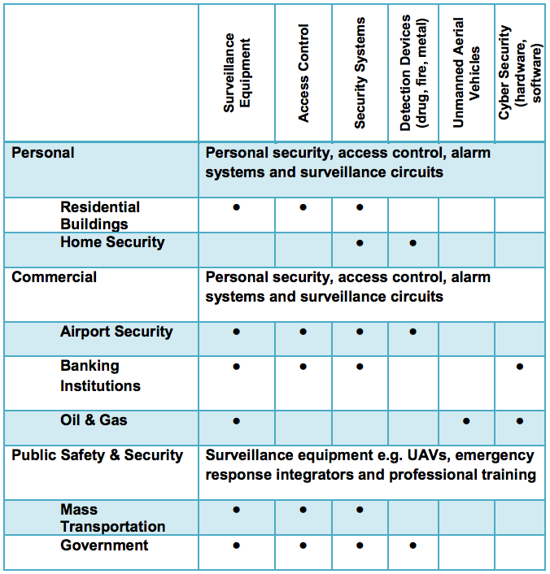
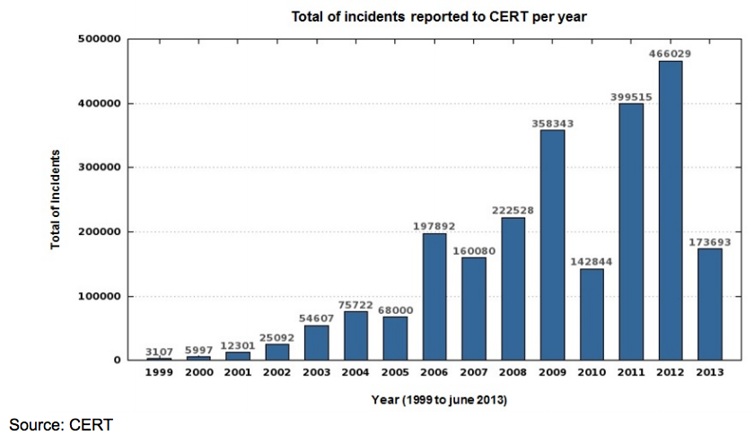

Below are the areas that currently present the best prospects in the Security market:

The Security Industry Association’s (SIA) online 2012 Brazil Security Market Report indicates the nation’s market for electronic security equipment is expected to be valued at US$1.8 billion by 2017. The current market breaks down as follows:
Geographically, the market is concentrated in the South and Southeast regions of Brazil, where 63.4% of Security companies and 65.5% of personnel can be found. Outside these regions, other states such as Bahia, Ceará, Pernambuco, Goiás and the Federal District (due to purchases made by the GOB) also deserve some attention.
Cyber Security
Approximately 32% of businesses in Brazil claim to have been victims of cybercrime in 2012, the second most common form of economic crime. Brazil´s Computer Emergency Response Team (CERT) reported total cyber-attacks rose 16.5% to 466 million in 2012. The anti-virus firm Symantec estimates that losses due to cybercrime in Brazil in 2011 totaled R$15.9 billion (currently US$7.2 billion), with more than 28.3 million victims. Computer IT security experts at Norton, in 2011, named Brazil as one of the six countries in the world most affected by cybercrime due to a high incidence of phishing, malware, and “Trojan horse” virus attacks, often targeted at personal banking. Unfortunately, until recently, police efforts to fight cybercrime were complicated because it was not classified as a crime.
However, on November 30, 2012, President Rousseff passed two laws that designate cybercrime as a crime in the Penal Code as determined by (1) access of confidential commercial or private data through hacking or the sale of information obtained in this manner, and (2) the use of a credit card without the owner’s permission. These crimes are punishable by up to five years in prison. The Ministry of Defense is concerned about the risk of cyber-attacks during upcoming mega events such as the 2016 Olympics, and the current Minister of Defense, Celso Amorim, admitted before a public audience that Brazil suffers from fragility in the area of cyber security.

SESGE
The federal government has created a specific agency, SESGE, under the Ministry of Justice that is charged with overall security planning and coordination for the World Cup, the Olympics and other major events.
The best resources for information about public security, including announcement of public tenders, can be followed at the below website:
http://portal.mj.gov.br/data/Pages/MJ2774919DITEMID82884F3FB41C4E4E9CCC0E2B EAF60600PTBRNN.htm